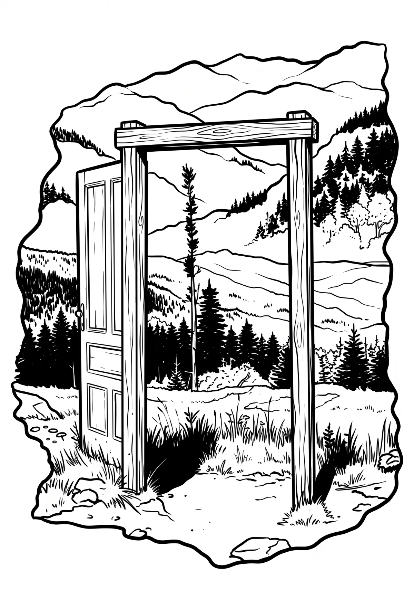

Pancíř
Plzeňský kraj · 1214 m n. m.

přírodní památka · #090
Pancíř (německy Panzer Berg) je šumavská hora v Pancířském hřbetu, který podle ní dostal název, ač jeho nejvyšší horou je Můstek s 1234 m. Pancíř se nachází 5 km severovýchodně od Železné Rudy. Na vrcholu je Horská chata Pancíř z roku 1923 s rozhlednou.